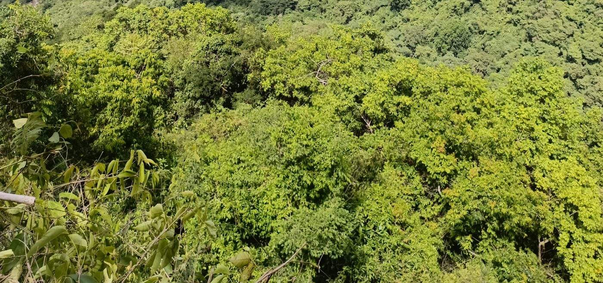
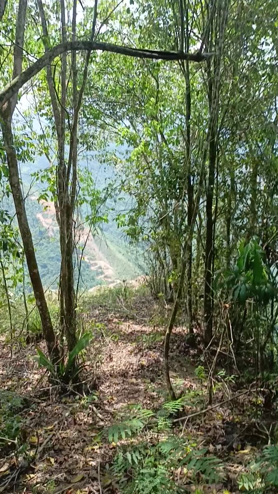

Who we are
FUESOS is a Colombian non-profit organization (NIT 900.862.769-8) based in Girón, Santander. We work on private land conservation, ecosystem restoration and community development with rural, indigenous and Afro-Colombian communities.
NAWUINDUA Civil Society Nature Reserve
FUESOS owns the Villa Diana property in Vereda Zaragoza, Lebrija, Santander, on the slopes of the Lebrija River canyon. The property holds about 25 hectares, including native premontane forest certified by the regional environmental authority (CDMB) in February 2026, two springs and a stream. In October 2026 FUESOS filed the registration of the property as a Civil Society Nature Reserve with Parques Nacionales Naturales de Colombia; the application is under review.
Zaragoza Forest Oasis
An ecosystem-based adaptation project proposed to the Global EbA Fund: restoring native forest, building climate-compatible livelihoods such as apiculture, and monitoring local climate and biodiversity, designed so that other forest-scarce Andean micro-regions can replicate it.
Our approach
- Secure long-term legal protection of forest remnants.
- Restore degraded habitat with native species.
- Train local people as biodiversity and climate monitors.
- Work with communities and local institutions.
The forest


Where we are
Vereda Zaragoza, municipality of Lebrija, Santander, Colombia (approx. 7.23° N, 73.24° W), on the slopes of the Lebrija River canyon.
Contact
Legal representative: John Jairo Moncada Cepeda
Email: funexsos@gmail.com · Phone/WhatsApp: +57 316 580 3779
Calle 49 # 27-30, El Poblado, Girón, Santander, Colombia